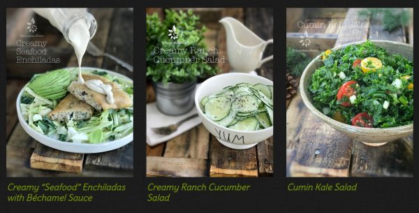
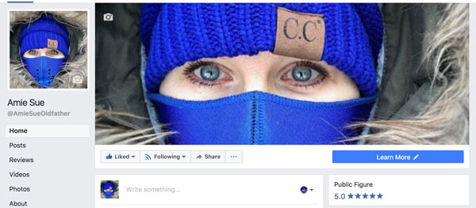
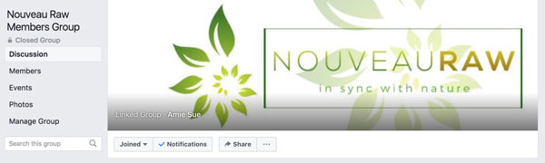

NouveauRaw Update
Greetings! I am not sure what time of the day you will receive this so I won’t start with my typical, “Good morning!” or “Good evening!” No matter what time of the day it is… it is good! :) I briefly wanted to share with you a few things that are taking place here in the land of NouveauRaw.
Recipe Titles Changed:

First of all, you might have noticed that the recipe titles have changed. And if not, that’s ok too. Even better if you didn’t, since that means it didn’t interrupt the flow of things. :) I had to manually open each and every recipe and remove the tagline of (raw, vegan, gluten-free, etc.) from the title and URL and relocate it, so it is now the very first line of each recipe. Shew, if that wasn’t a job. With over 1,200 recipes to do my eyes were getting a little wonky on me. Hehe And for those of you who follow me on Facebook and mentioned to me that I have been “quiet” on there… this is what I have been doing.
The reason that I needed to do all of this is our friend Google viewed it as spammy and therefore it decreased the ability for people to find me through searching. And frankly, it helped to “clean” things up a bit, especially for those of you who mainly view the site on mobile devices.
And let’s be honest, tagging recipes is getting to be a long-winded mouthful…. raw, vegan, gluten-free, soy-free, alkaline, Paleo, nut-free, seed-free, dairy-free, high-raw… it’s hard to keep up! Sometimes the recipe titles would be four lines long. Think of it as decluttering. Your brain feels better already, doesn’t it? :)
Social Media Changes
Secondly, for those of you who follow me on Facebook, I have made a few changes. I have created a new public page as well as a Private Facebook Group for NouveauRaw members only. This one excites me. I believe that it will become a place to grow our community. I thought that the forum would have been the place to do that, but I now realize that it is difficult to carry on a conversation in the forum format. So be sure to come over and join the discussion in the new FB group.
Facebook Public Page:
Here I will be posting all the other parts of my life including my recipe creations. Who knew I ever left the kitchen?! Hehe Everything from decorating, crafty things I am working on, thoughts, ideas, and anything else that pops up in my life. Click (here) and press the “LIKE” button. Once you do that, my postings will turn up on your personal news feeds.

Private NouveauRaw Membership Group:
This private group is there so we can all talk amongst ourselves about things your NouveauRaw experiences. Such as; sharing photos of the recipes that you make from the site, introducing oneself, ask questions, offer support, encouragement, and to inspire one another. I just ask that we keep the subject matters clean and free from negativity. There is more than enough of that in the world. I don’t know about you, but I could use a break from it. This Private Group is a place to build one another up, and it is, after all, a family site. :)

Don’t have a Facebook Account?
If you don’t have a Facebook account, To join the Members Group, you will need to create one. Click (here) for step by step instructions on how to set up a Facebook account. It’s very quick, easy, and free. Once you do, click (here) to join the group. You will be asked to provide your NouveauRaw membership username or email address, so I can identify you and approve your request. I will respond to the requests promptly. Be patient with me; I am a one-woman show. hehe
Well, I am going to wrap this up for now. I just wanted to keep in touch. Please do the same. :) Have a blessed and happy day, amie sue
© AmieSue.com